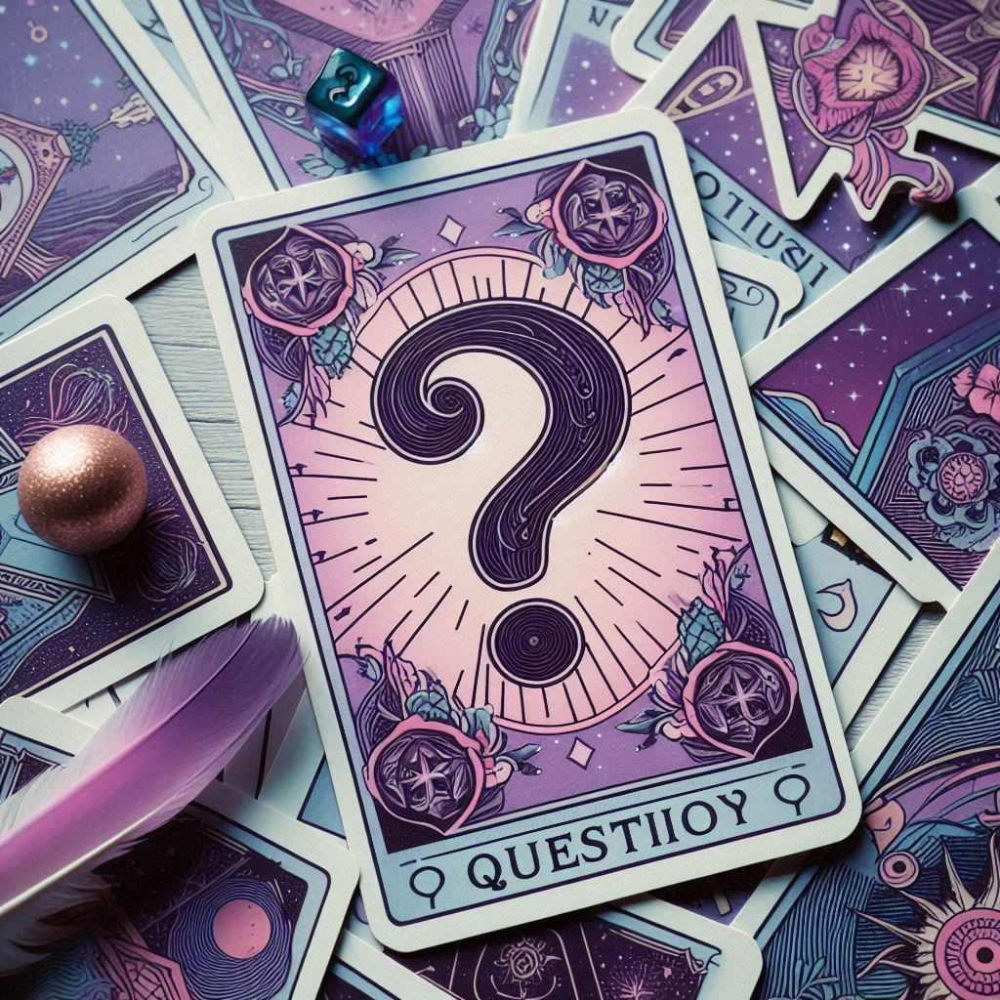
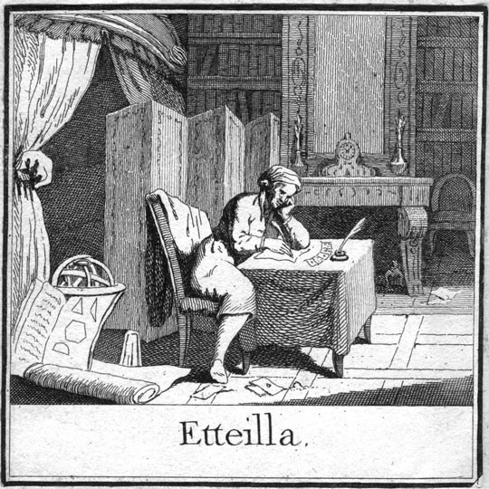
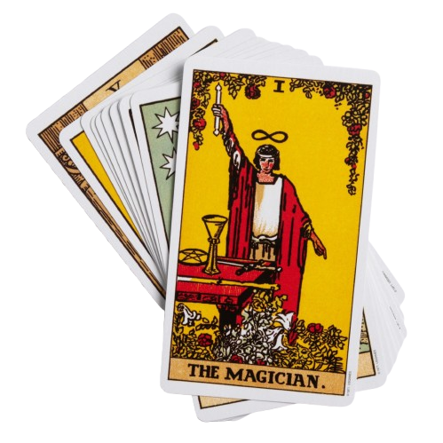
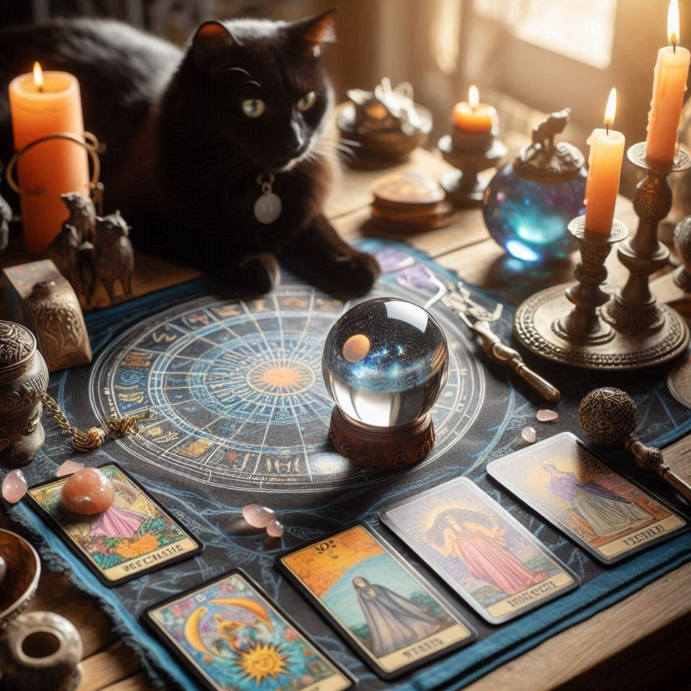
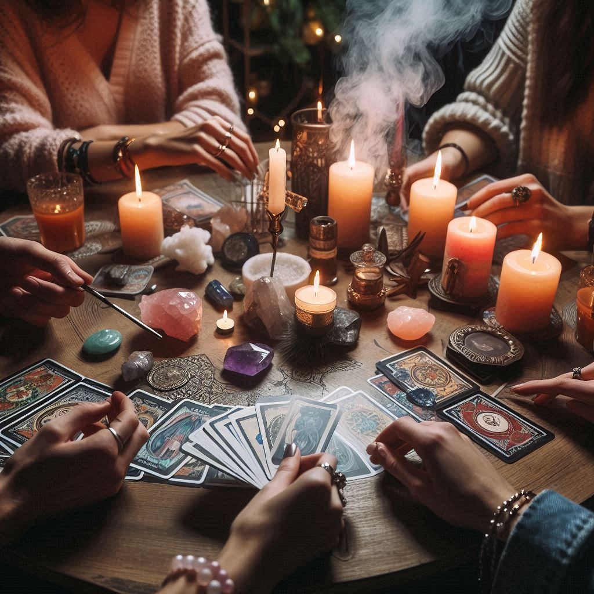

O que é o Tarot?

O Tarot é um conjunto de cartas que são utilizadas para práticas divinatórias ou de autoconhecimento. Um baralho tradicional de Tarot contém 78 cartas, divididas em dois grupos principais: os Arcanos Maiores e os Arcanos Menores.
Arcanos Maiores: 22 cartas que representam aspectos mais profundos e universais da vida, como o Louco, a Imperatriz, a Morte, entre outros.
Arcanos Menores: 56 cartas que se assemelham às cartas de baralho comuns e são divididas em quatro naipes (Paus, Copas, Espadas e Ouros), cada uma com 14 cartas.
Cada carta tem um significado específico e pode ser interpretada de diferentes formas, dependendo do contexto e da posição em que aparece durante uma leitura. As leituras de Tarot podem ser usadas para refletir sobre questões pessoais, tomar decisões ou simplesmente para explorar a mente e as emoções.
Origem Histórica
A origem exata do Tarot é um mistério e há várias teorias sobre como e onde ele surgiu. Acredita-se que as cartas de Tarot apareceram pela primeira vez no final do século XIV na Europa, mais especificamente na Itália e na França. Inicialmente, eram usadas como cartas de jogos e obras de arte, especialmente entre a nobreza.

Foi apenas no século XVIII que o Tarot começou a ser associado a práticas de adivinhação e estudos ocultistas. O francês "Etteilla" é considerado um dos primeiros cartomantes a usar o Tarot para leituras astrológicas e adivinhação.
Existem também teorias que sugerem que o Tarot pode ter raízes mais antigas, possivelmente ligadas a civilizações como a egípcia, chinesa ou indiana, mas essas ideias são mais especulativas.
Estrutura do Tarot
O Tarot é composto por 78 cartas divididas em dois grupos principais: os Arcanos Maiores e os Arcanos Menores.

Arcanos Maiores
São 22 cartas que representam arquétipos e aspectos universais da experiência humana. Algumas dessas cartas incluem:
O Louco
O Mago
A Sacerdotisa
A Imperatriz
O Imperador
O Hierofante
Os Enamorados
O Carro
A Justiça
O Eremita
A Roda da Fortuna
A Força
O Enforcado
A Morte
A Temperança
O Diabo
A Torre
A Estrela
A Lua
O Sol
O Julgamento
O Mundo
Arcanos Menores
São 56 cartas divididas em quatro naipes: Paus, Copas, Espadas e Ouros. Cada naipe contém 14 cartas:
Cartas Numeradas: de Ás (ou 1) até 10.
Cartas da Corte: Rei, Rainha, Cavaleiro e Valete.
Essas cartas refletem aspectos mais cotidianos e específicos da vida, ao contrário dos Arcanos Maiores que abordam temas mais amplos e profundos.
Cada carta tem um significado simbólico e pode ser interpretada de diversas maneiras, dependendo da posição e do contexto em uma leitura. O Tarot é uma ferramenta rica e complexa, usada tanto para adivinhação quanto para autoconhecimento e reflexão.
Tarot e Esoterismo
O Tarot é frequentemente associado ao esoterismo, que engloba uma variedade de tradições, práticas e crenças místicas ou ocultas que buscam entender a natureza oculta do universo e da existência humana. O esoterismo valoriza a sabedoria oculta, a conexão com o divino e o desenvolvimento espiritual.

Tarot no Esoterismo
O Tarot é utilizado no esoterismo como uma ferramenta de autoconhecimento, orientação e reflexão. As cartas são vistas como espelhos que refletem as energias e situações da vida do consulente, ajudando a revelar insights sobre o passado, presente e possíveis futuros.
Usos Esotéricos do Tarot
Adivinhação: Muitas pessoas usam o Tarot para prever eventos futuros ou obter respostas para questões específicas.
Autoconhecimento: O Tarot pode ser uma ferramenta poderosa para explorar o subconsciente e compreender melhor os próprios pensamentos e sentimentos.
Meditação: Algumas pessoas meditam sobre cartas específicas do Tarot para obter insights espirituais ou clareza sobre uma situação.
Rituais e Magia: Em certas tradições esotéricas, as cartas de Tarot são usadas em rituais ou práticas mágicas para direcionar energia ou manifestar intenções.
Esoterismo
O esoterismo inclui várias outras práticas e sistemas de crenças, como a astrologia, a alquimia, a cabala, o hermetismo e diversas formas de magia e espiritualidade. Essas práticas compartilham a busca pelo entendimento de verdades ocultas e a conexão com o sagrado ou o transcendente.

Princípios Comuns no Esoterismo
Interconexão: A crença de que tudo no universo está interconectado e que há um vínculo oculto entre todos os elementos da criação.
Simbolismo: O uso de símbolos e metáforas para representar verdades espirituais e ocultas.
Transformação: A ideia de que o crescimento espiritual envolve um processo de transformação interior e autodescoberta.
Modernidade e Popularidade
No século XX, o tarot ganhou ainda mais popularidade com a criação do Tarot Rider-Waite, publicado em 1909 por Arthur Edward Waite e ilustrado por Pamela Colman Smith. Este baralho se tornou um dos mais conhecidos e amplamente utilizados no mundo. Hoje, o tarot é utilizado por pessoas de diversas culturas e crenças para reflexão pessoal, meditação, orientação espiritual e previsões.